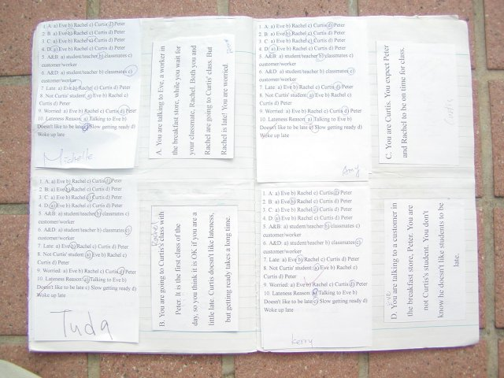
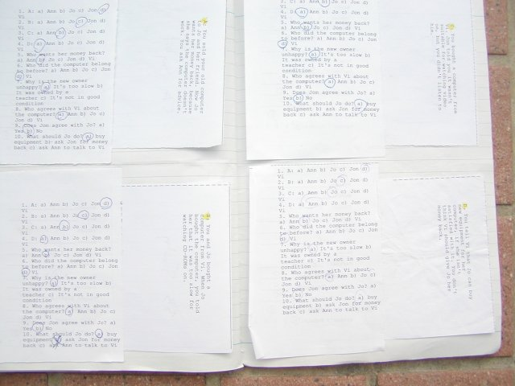
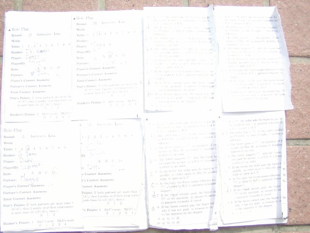
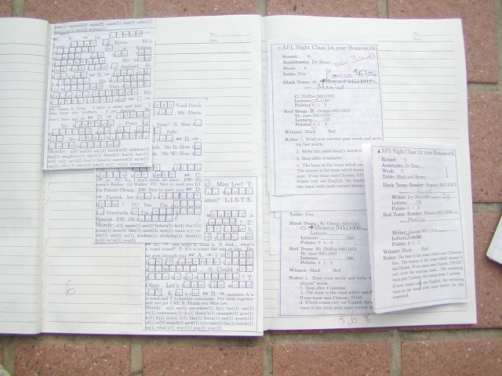

In a real jigsaw, a picture on a board is cut up into little interlocking blocks. The puzzle is, given the individual blocks, to put them together so the picture is reconstituted.
In the jigsaw activity in CooperativeLearning, members of a group are each given different information, that individually leaves the members puzzled, because, for instance, it is only about one aspect of a situation. The members have to put their individual information together, and come to a shared understanding of the whole situation.
The whole situation corresponds to the big jigsaw picture. The information given to each member of the group corresponds to the individual blocks.
Members of the group can be tested individually for their understanding of the total situation. The group whose members individually best understand the total situation are the winners.
   
With the closing of the 5-year junior-college program at Chinmin, and its replacement by the 2-year post-high-school program, the ability of the students to use English for real-world purposes dropped.
One of my disappointments was using jigsaw in a English as Foreign Language Class in these really low-level classes.
John Myers wrote:
Another consequence occurs when students return to their home groups to teach their material. This can result in four or five boring lectures instead of one by the teacher. In any case, students are too busy copying notes to make sense of the new and complementary information.
My experience was:
I gave the 4 members of the group a card each. Each member just read from the card and there was no discussion. The most able member then spoke, telling the group what the answers were.
Thinking back, the presence of the cards may have been counterproductive. Having answers, though an essential part of coop learning, in being high stakes, might have stifled free thinking!
I gave up asking these students to talk to each other in the FL, at least in requiring them to put their own words in their mouths.
I was unable to continue with these and other more challenging, open-ended tasks that required students to use English to solve problems. Instead the work I am requiring students to do now is focused on the language. This is not good, but it seems to have face validity for the students.